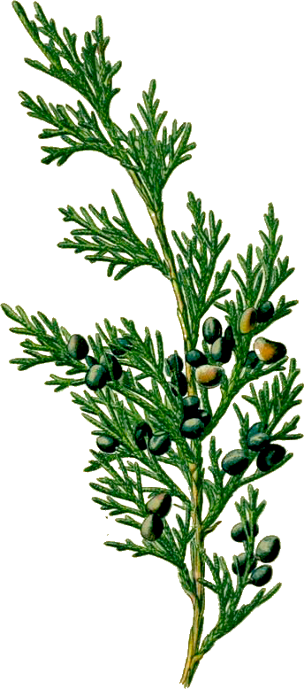

When the chesty, fierce-furred bear becomes sick he travels the mountainsides and the fields, searching for certain grasses, flowers, leaves and herbs, that hold within themselves the power of healing. He eats, he grows stronger.
Could you, oh clever one, do this? Do you know anything about where you live, what if offers? Have you ever said, “Sir Bear, teach me. I am a customer of death coming, and would give you a pot of honey and my house on the western hills to know what you know?”
After the water thrush, there was only silence.
Understand from the first this certainty. Butterflies don’t write books, neither do lilies, or violets.
Which doesn’t mean they don’t know, in their own way, what they are. That they don’t know they are alive — that they don’t feel, that action upon which all consciousness sits, lightly or heavily.
Humility is the prize of the leaf-world. Vainglory is the bane of us, the humans.
Sometimes the desire to be lost again, as long ago, comes over me like a vapor.
With growth into adulthood, responsibilities claimed me, so many heavy coats. I didn’t choose them, I don’t fault them, but it took time to reject them.
Now in the spring I kneel, I put my face into the packets of violets, the dampness, the freshness, the sense of ever-ness. Something is wrong, I know it, if I don’t keep my attention on eternity.
May I be the tiniest nail in the house of the universe, tiny but useful. May I stay forever in the stream. May I look down upon the windflower and the bull thistle and the coreopsis with the greatest respect.
***
Teach the children.
We don’t matter so much,
but the children do.
Show them daisies and the pale hepatica. Teach them the taste of sassafras and wintergreen. The lives of the blue sailors, mallow, sunbursts, the moccasin-flowers. And the frisky ones — inkberry, lamb’s-quarters, blueberries. And the aromatic ones;— rosemary, oregano.
Give them peppermint to put in their pockets as they go to school. Give them the fields and the woods and the possibility of the world salvaged from the lords of profit.
Stand them in the stream, head them upstream, rejoice as they learn to love this green space they live in, its sticks and leaves and then the silent, beautiful blossoms.
Attention is the beginning of devotion.